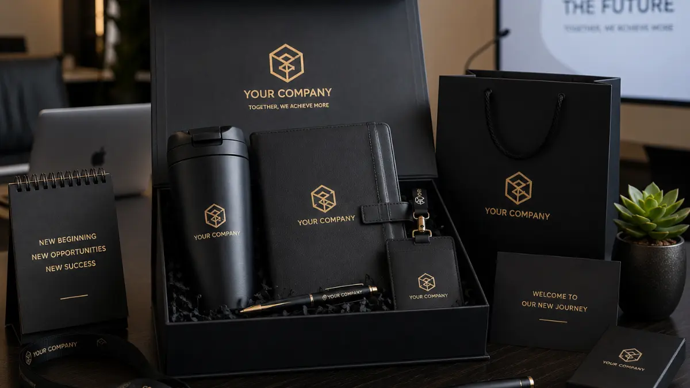

Apa yang Dimaksud dengan Merchandise Kantor Unik?
Merchandise kantor unik adalah barang kerja atau perlengkapan harian yang didesain khusus dengan sentuhan identitas perusahaan sehingga tidak terasa generik seperti suvenir pada umumnya.
Konsep "unik" di sini merujuk pada kombinasi fungsi, desain, dan relevansi dengan gaya kerja penerimanya.
Berbeda dengan suvenir konvensional yang hanya menempelkan logo pada barang standar, merchandise kantor unik dirancang dengan mempertimbangkan siapa yang akan memakainya, di lingkungan kerja seperti apa, dan pesan brand apa yang ingin disampaikan.
Contohnya adalah tumbler dengan desain minimalis yang cocok dibawa ke berbagai suasana kerja, atau daily kit yang menggabungkan beberapa alat tulis dalam satu kemasan bertema.
Pendekatan ini membuat penerima merasa barang tersebut memang dirancang untuk mereka, bukan sekadar cetakan logo massal.
Hal ini penting karena persepsi personal terhadap sebuah barang memengaruhi seberapa sering barang tersebut digunakan, dan penggunaan berulang itulah yang menjadi inti dari strategi branding melalui merchandise.
Mengapa Merchandise Kantor Penting untuk Identitas Brand?
Merchandise kantor penting bagi identitas brand karena barang tersebut menjadi media eksposur logo yang muncul berulang kali dalam rutinitas kerja, jauh lebih sering dibanding iklan konvensional.
Setiap kali karyawan memakai tumbler atau tas bermerchandise di ruang rapat, kafe, atau saat bekerja dari luar kantor, brand tersebut secara pasif terlihat oleh orang lain.
Eksposur berulang ini membangun apa yang dalam dunia pemasaran disebut sebagai familiarity, yaitu rasa akrab terhadap sebuah nama atau logo karena sering dilihat.

"Familiarity yang terbentuk secara alami cenderung lebih kuat dibanding paparan iklan berbayar, karena konteksnya terasa organik dan tidak memaksa."
— Mega Anggun, Penulis Merchandise Kantor
Selain itu, merchandise kantor juga berperan dalam membangun rasa memiliki di kalangan karyawan. Ketika karyawan menerima barang yang terasa dipikirkan dengan baik, mereka cenderung merasa dihargai dan lebih terhubung dengan identitas perusahaan tempat mereka bekerja.
Perasaan ini pada gilirannya dapat memperkuat konsistensi cara karyawan merepresentasikan brand, baik dalam interaksi internal maupun saat bertemu klien.
Bagi klien atau mitra bisnis, merchandise yang diterima sebagai suvenir turut membentuk kesan pertama terhadap kualitas dan perhatian sebuah perusahaan terhadap detail.
Barang yang terasa asal-asalan justru berisiko menimbulkan kesan sebaliknya, sehingga pemilihan merchandise perlu dipertimbangkan secara serius, bukan sekadar pelengkap acara.
Bagaimana Cara Memilih Merchandise Kantor yang Tepat?
Cara memilih merchandise kantor yang tepat adalah dengan menyesuaikan jenis barang terhadap kebutuhan nyata penerima, gaya kerja perusahaan, dan pesan brand yang ingin ditonjolkan, bukan sekadar memilih barang termurah atau paling umum di pasaran.
Langkah pertama adalah memahami siapa target penerima merchandise tersebut.
Karyawan lapangan mungkin lebih membutuhkan barang tahan banting seperti tumbler stainless atau tas serbaguna, sementara tim kantor yang banyak bekerja di meja mungkin lebih terbantu dengan daily kit berisi alat tulis dan aksesori meja kerja.
Langkah kedua adalah mempertimbangkan konteks penggunaan. Merchandise untuk acara gathering tahunan bisa lebih ekspresif dan bertema khusus, sedangkan merchandise untuk kebutuhan harian sebaiknya lebih fungsional dan netral agar nyaman dipakai dalam berbagai situasi kerja.
Langkah ketiga adalah menjaga konsistensi visual. Warna, tipografi, dan elemen grafis pada merchandise sebaiknya selaras dengan panduan identitas visual perusahaan yang sudah ada, sehingga barang tersebut terasa menjadi bagian dari satu kesatuan brand, bukan produk terpisah yang kebetulan diberi logo.
Langkah keempat adalah mempertimbangkan kualitas material. Merchandise yang cepat rusak justru dapat menimbulkan kesan negatif terhadap brand, sementara barang dengan kualitas baik akan terus dipakai dalam jangka panjang dan memperpanjang durasi eksposur brand secara alami.
Jenis Merchandise Kantor yang Paling Sering Digunakan
Beberapa jenis merchandise kantor secara umum lebih sering dipilih karena tingkat kegunaannya yang tinggi dalam aktivitas kerja sehari-hari.
Tumbler dan botol minum menjadi salah satu pilihan paling populer karena dipakai hampir setiap hari, baik di kantor maupun saat bepergian. Selain fungsional, tumbler juga memberikan area cetak logo yang cukup luas dan terlihat jelas.
Tas kerja atau tote bag juga banyak dipilih karena sifatnya yang serbaguna, dapat dipakai untuk membawa laptop, dokumen, maupun keperluan pribadi lain. Tas dengan desain rapi cenderung dipakai lebih lama dibanding suvenir sekali pakai.
Alat tulis dan perlengkapan meja kerja seperti notes, pulpen, dan organizer meja juga menjadi favorit karena langsung berkaitan dengan aktivitas kerja harian. Barang jenis ini cocok untuk kebutuhan onboarding karyawan baru maupun suvenir klien.
Paket bundling tematik, seperti kombinasi tumbler, tas, dan alat tulis dalam satu kemasan, semakin diminati untuk acara khusus seperti gathering perusahaan, seminar internal, atau perayaan hari besar nasional, karena memberikan kesan lebih lengkap dan personal dibanding satu jenis barang saja.
Kesalahan Umum dalam Pengadaan Merchandise Kantor
Beberapa kesalahan umum sering terjadi saat perusahaan mengadakan merchandise kantor, dan kesalahan ini dapat mengurangi efektivitas merchandise sebagai media branding.
Kesalahan pertama adalah memilih barang hanya berdasarkan harga termurah tanpa mempertimbangkan kualitas dan daya tahan. Barang yang cepat rusak justru dapat menimbulkan persepsi bahwa perusahaan kurang memperhatikan detail.
Kesalahan kedua adalah desain logo yang terlalu besar atau dipaksakan sehingga terlihat seperti iklan, bukan bagian alami dari desain barang. Penempatan logo yang proporsional cenderung terlihat lebih profesional dan tetap enak dipakai sehari-hari.
Kesalahan ketiga adalah tidak mempertimbangkan relevansi barang dengan gaya kerja penerima. Merchandise yang tidak sesuai kebutuhan cenderung jarang dipakai, sehingga tujuan branding tidak tercapai secara maksimal.
Kesalahan keempat adalah kurangnya perencanaan waktu produksi, terutama untuk kebutuhan acara dengan tenggat tertentu, seperti perayaan hari kemerdekaan atau acara tahunan perusahaan.
Pemesanan mendadak dapat membatasi pilihan desain maupun kualitas material yang tersedia.
Tips Memaksimalkan Dampak Branding dari Merchandise Kantor
Untuk memaksimalkan dampak branding, perusahaan dapat menerapkan beberapa pendekatan sederhana namun efektif dalam pengadaan merchandise kantor.
Menyesuaikan tema merchandise dengan momen tertentu, seperti konsep kerja fleksibel atau perayaan nasional, dapat membuat barang terasa lebih relevan dan tidak generik dibanding merchandise standar tanpa konsep.
Menggabungkan beberapa barang fungsional dalam satu paket bundling dapat meningkatkan kesan lengkap dan personal, sekaligus memberikan nilai lebih dibanding pemberian satu jenis barang saja.
Melibatkan tim internal dalam proses pemilihan desain, terutama untuk merchandise yang akan dipakai karyawan sendiri, dapat meningkatkan rasa memiliki terhadap barang tersebut karena mereka merasa dilibatkan dalam prosesnya.
Menjaga komunikasi yang jelas dengan penyedia merchandise mengenai kebutuhan desain, kuantitas, dan tenggat waktu juga membantu memastikan hasil akhir sesuai ekspektasi dan siap digunakan tepat waktu.

Kesimpulan
Merchandise kantor unik bukan sekadar pelengkap acara, melainkan media branding yang bekerja secara pasif namun konsisten dalam aktivitas kerja sehari-hari. Pemilihan jenis barang yang relevan, desain yang selaras dengan identitas visual, serta kualitas material yang baik akan menentukan seberapa efektif merchandise tersebut memperkuat pengenalan brand di mata karyawan maupun klien.
Untuk kebutuhan yang lebih spesifik, perusahaan dapat mengeksplorasi konsep merchandise sesuai gaya kerja tim, seperti koleksi bertema kerja fleksibel, paket bundling untuk acara perusahaan, maupun perlengkapan kerja harian yang praktis digunakan setiap hari.